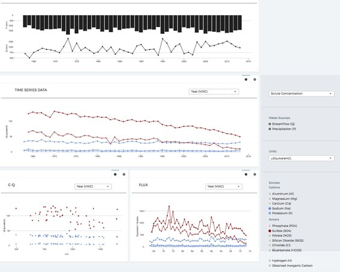
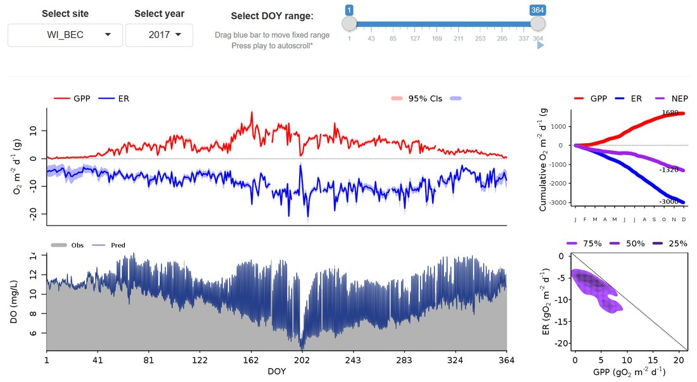
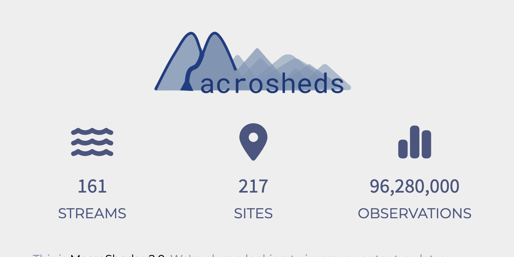

Bernhardt Lab
Aquatic–Terrestrial Biogeochemistry
Data & Tools
Several papers from the lab come with an interactive companion — a way to explore the underlying dataset rather than just read about it. Most of these were built by lab members and students through Duke's Data+ program. A few are listed below.

Data platform
HBWatER is a data visualization platform for the Hubbard Brook Watershed Ecosystem Record (HBWatER). HBWatER is a record of the amount and the chemical composition of precipitation and streamwater for a series of forested watersheds in central New Hampshire, USA that dates back to 1963. Since 1963 researchers have been taking weekly samples of rain, snow and streamwater to study what comes in and what leaves these watersheds. By looking at the difference between inputs and outputs, scientists have learned a great deal about how these forested ecosystems work as well as how human impacts like acid rain, deforestation and climate change are affecting them.
All code for the project is open-source and is available on GitHub.

Data platform
Visit the StreamPULSE data platform to learn about how we measure the metabolic regimes of flowing waters, check out or use our datasets, and consider participating by adding your own. This website is a central hub for stream ecosystem science with the goal of understanding the seasonal and annual patterns of river energetics.
Developed by data scientists Aaron Berdanier and Mike Vlah; development funded by the NSF Macrosystems program.

Data platform
Watershed ecosystem science has identified plenty of idiosyncrasy within watersheds, but hasn't produced many general theories about watersheds at large. A major reason has been the challenge of data access and integration across all the organizations that house watershed data (LTER, CZO/CZ Net, NEON, DOE, USFS, etc.). MacroSheds unites stream and watershed data from all these sources on one platform, making it easy for anyone to explore the hydrology, water quality, and biogeochemistry of rivers across North America and beyond.
Led by Emily Bernhardt with Matt Ross (Colorado State University) and data scientist Mike Vlah.
Read about lab alumnus Matt Ross's data-visualization path in this feature, or check out Duke's Data+ program for the kind of team that builds tools like these.